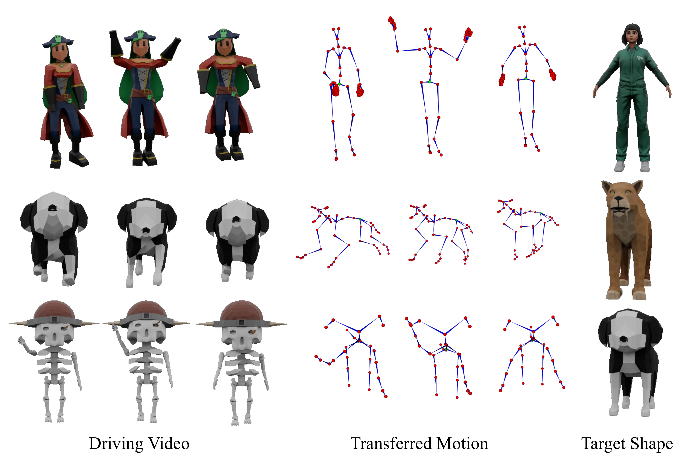
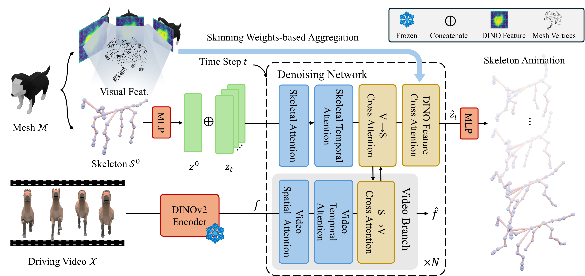
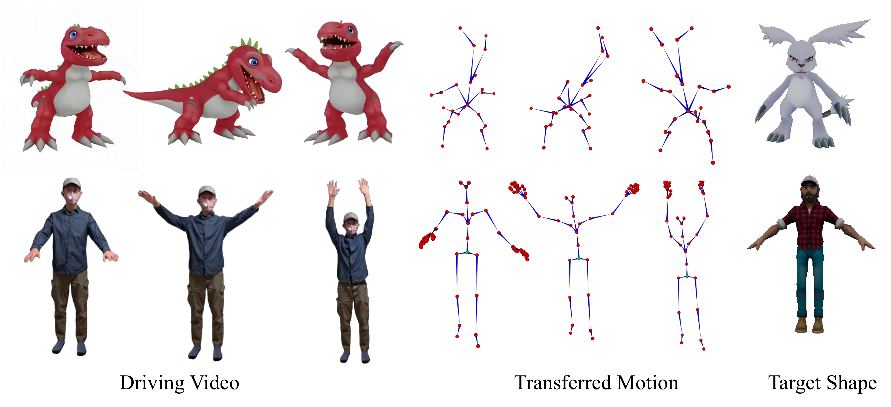

Cross-category transfer
SkelMo retargets motion across significantly different bone proportions, joint counts, and hierarchies, including human-to-quadruped transfer.
Motion generation for rigged shapes is essential for scalable 4D asset production, yet existing systems are commonly tied to specific skeleton templates or expensive per-case optimization. We present SkelMo, a diffusion-based framework for category-agnostic skeletal animation generation from 2D video guidance.
SkelMo bridges visual motion cues and heterogeneous 3D skeletons through skinning-aware texture-semantic injection and bidirectional video-skeleton fusion. Trained on a curated large-scale dynamic dataset, it produces high-fidelity, anatomically consistent motion for unseen categories ranging from real species to fantastical characters.

The rest-pose skeleton remains a persistent geometric anchor during diffusion, preserving bone lengths and target morphology.
Multi-view DINOv2 features are aggregated with skinning weights, giving each joint localized appearance and functional semantics.
Video and skeleton branches exchange information in both directions to align visual dynamics with arbitrary joint hierarchies.

SkelMo retargets motion across significantly different bone proportions, joint counts, and hierarchies, including human-to-quadruped transfer.

The framework remains stable with stylized AI-generated clips and real-world captures under complex lighting and backgrounds.
@inproceedings{tao2026skelmo,
title = {SkelMo: Universal Skeletal Motion Generation for 3D Rigged Shapes},
author = {Tao, Ye and Yao, Yuxin and Liu, Kendong and Wu, Dapeng and Hou, Junhui},
booktitle = {European Conference on Computer Vision (ECCV)},
year = {2026}
}